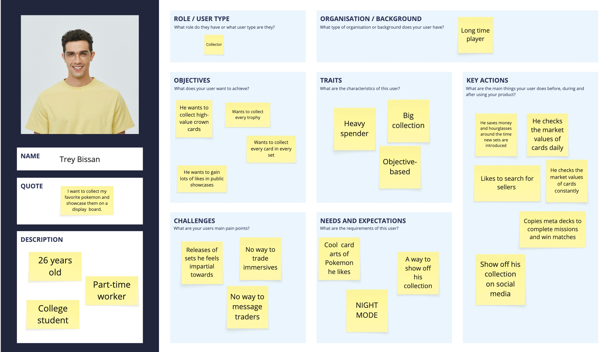
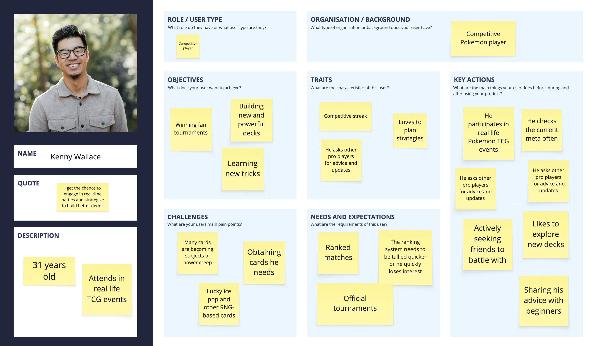
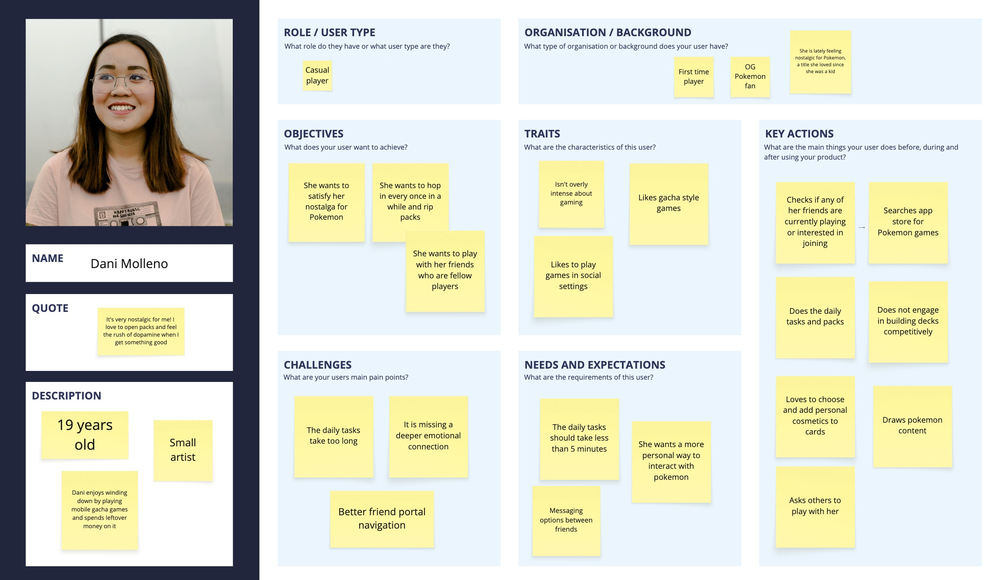

Overview
Problem:
There are three major UX problems in PTCGP:
1. The majority of TCG players complain about the slow user interface that requires too many screens per action.
2. After playing for two weeks I realize there are intervals between ranked seasons with nothing to do, as tallying results takes weeks. TCG Events include new set releases based on the game generations and line up with previous key milestones of net IAP revenue for Pokémon TCG Pocket, according to AppMagic. For example, according to PocketGamer.biz, on Pokemon Day, the day the new Paldean Wonders set was released in TCG Pocket, the game earned $4.7 million on this single day, up 57% from the day prior and 486% compared to one week earlier.
3. The friends feature is too convoluted. There is no way to scroll down to the bottom of the screen, favorite certain friends, or look up . The user has to manually go into the friend’s profile to see what their wishlisted is and how many copies of the cards they have, when this function could easily be incorporated to maximize the amount of interaction between players.
Solution
From a technical standpoint minimize the screens per action, increase long-term missions that incentivize players to play even when there is no new event or between seasons, and redesign the entire Social Hub. Creative solutions include a storyline function to replace the current solo random matches OR an increased amount of available missions, either increased difficulty scales or number. Currently, you get two free draws per day and a daily log in bonus that takes a minimum of five screens to sit through. The missions are too quick to complete and never vary in type. There are fan-hosted tournaments that provide bonuses for building solid decks but not ones by the company. There is a possibility to introduce official virtual tournaments just like the TCG but virtually, and include prizes, limited edition items and an option to join these matches by passing prelimitations. Furthermore, to incentivize players to buy in-game currencies provide a valuable, limited-edition reward for completing a set (a huge milestone). Examples include a special profile picture, card, or hourglasses. On a side note, many people miss the Sneak Peek feature in Wonder picks as it helped them grab high value cards. A substitute to the pity system could be a more expensive pack option that guarantees a certain rarity card.
Details
Role
UX Designer, UX Researcher
Timeline
February 21st - Present.
Tools
Figma, Miro.
Research
Expert Interview
I reviewed feedback from experienced TCG players who regularly compare PTCGP to both physical Pokemon events and other digital card games.
Competitive Analysis
I compared PTCGP with live-service card games that keep players engaged through rotating missions, ranked events, and meaningful reward loops. The comparison showed that stronger progression systems and clearer event incentives could make PTCGP feel more active without overwhelming casual players.
User Interviews
User interviews highlighted two core frustrations: They consistently pointed to the dysfunctional UI requiring too many taps especially for routine actions, and limited reasons to return between set drops or ranked seasons.
Players wanted faster navigation, more varied missions, and more ways to interact with the collection they are building.
"The amount of clicks/presses needed to conclude every single action, from opening packs, to wonder picking, to trading, to organizing decks is mind numbing."
"With animations on top of this, you have to go through so freaking many press-button-to-confirm menus as well... I'm spending more time in loading limbo than actually playing the damn game because it's a 12 step process to claim a single card."
"It's the reason i'm playing less and less time, I don't even want to open the game knowing that 2/3 (exagerating on purpose) of my time are loading screens."
Personas
I created personas for casual collectors, daily grinders, and competitive-minded players. Each persona helped frame how different users would value features like streamlined pack opening, limited-time tournaments, and better long-term goals between expansions.



Design
Storyboards
Storyboards mapped how a player might move from opening the app to claiming rewards, joining an event, and opening packs. This helped identify moments where the current experience loses momentum and where a more satisfying loop could be introduced.
Sketching/Lo-fi Prototyping
Low-fidelity sketches explored simpler layouts for the home screen, missions, and event entry points. My design iterations focused on reducing unnecessary screens and making key actions feel faster. Early concepts explored condensed menu paths, clearer event access points, and more visible mission progress so players could immediately see what to do next.
Information Architecture
I reorganized the information architecture around the actions players care about most: collecting, battling, completing missions, and participating in events. Grouping these functions more clearly supports faster decision-making and less menu fatigue.
Interactive Prototypes
Interactive prototypes tested shortened user flows for daily play, event discovery, and special pack options. These prototypes made it easier to evaluate whether the redesigned experience felt more rewarding and easier to navigate than the current version.
Evaluate
Usability Testing
Usability testing focused on how quickly players could find events, understand missions, and complete repeat actions. Test participants generally responded well to the reduced number of screens and the clearer placement of progression-related features.
User Feedback
Feedback suggested that players were most excited by features that added purpose between expansion releases. Tournament support, better rewards, and more meaningful daily engagement were seen as the strongest improvements to the overall concept.
Questionnaires
Post-test questionnaires measured perceived clarity, satisfaction, and ease of use. Responses showed that participants understood the redesigned structure more quickly and felt the updated progression loop gave them more reasons to keep returning.
SUS Score
The SUS score was used to gauge overall usability across the prototype experience. While this project is conceptual, the scoring framework helped validate that simplifying navigation and strengthening rewards would likely improve player satisfaction.
Outcome
Expert Interview
Insights from expert perspectives reinforced the need for a stronger live-service strategy in PTCGP. Their feedback supported the direction of combining accessibility for casual players with more structure for dedicated and competitive users.
Competitive Analysis
The competitive review showed that PTCGP has room to stand out by improving retention rather than simply adding more content. Better event cadence, more desirable rewards, and fewer interface barriers could make the experience feel far more complete.
Projected Results
If implemented, these changes could increase daily engagement, improve player satisfaction, and create stronger motivation to spend on premium options without making the game feel unfair. The concept aims to balance monetization, usability, and long-term retention.
Reflection
This project helped me think critically about designing for both excitement and repetition in a live-service product. It reinforced how small UX friction points, when repeated every day, can have a major impact on whether players stay invested.